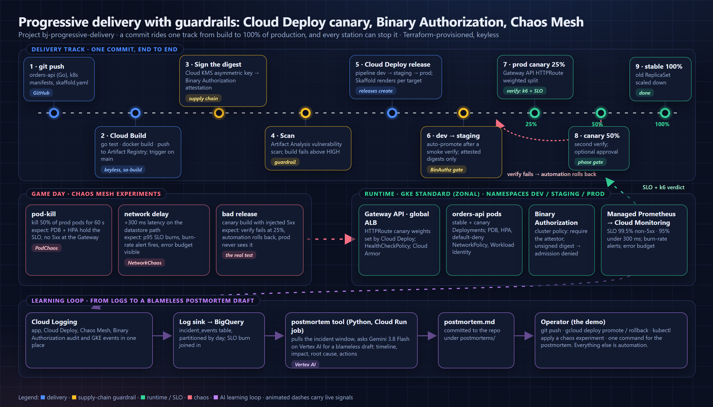

Google Cloud portfolio · project 5 of the series
A commit rides one track from build to 100% of production, and every station can stop it: KMS-signed attestations and Binary Authorization at admission, a Cloud Deploy canary with in-cluster verification and automated rollback, Chaos Mesh game days to prove it, and a Gemini-drafted postmortem from BigQuery log sinks when something breaks. Terraform for everything; keyless from CI to pod.
Narrated, against the live platform: an unsigned pod denied → pod-kill game day → a real release signed and promoted → the prod canary on route weights → a network-delay game day → a deliberately bad release caught by verification and rolled back → SLO budgets → a postmortem drafted from the logs.
Transcript: demo/transcript.md · Captions: demo/captions.srt. The two releases in the video are real Cloud Deploy releases; the rollback is the automation's, not a cut.
Live diagram (the dashed lines animate): the delivery track on top, game days and runtime in the middle, the learning loop at the bottom.

The image digest produced at station 2 is the identity everything else checks: it is what gets signed, what the release pins, what admission verifies, what the canary runs.
gcloud deploy releases create --images orders-api=…@sha256:… --deploy-parameters FAIL_RATE=0. Target-level parameters set APP_ENV and REPLICAS; release-level ones carry the fault knobs. Rendered per profile from raw YAML with # from-param placeholders.
Skaffold's verify runs as a Job inside the cluster: 80 POSTs, at most one failure, p95 ≤ 300 ms. In prod it prefers the orders-api-canary Service, so a bad canary fails at 25% with the other 75% on stable.
Promote after 60 s, advance canary phases after 60 s, and a repair rule that rolls back a failed rollout to the previous release. Nobody has to be awake; anyone can still approve or roll back by hand.
Cloud Deploy creates the canary Deployment and Service and rewrites the HTTPRoute backendRefs weights; the global external ALB does the splitting. No service mesh needed.
EC P-256, software protection. Only sa-github-ci (and the operator) hold cloudkms.signerVerifier. gcloud beta container binauthz attestations sign-and-create signs the digest and writes the occurrence against the attestor's note.
PROJECT_SINGLETON_POLICY_ENFORCE on the cluster; default rule require attestation by delivery-ci-attestor, block and audit log. GKE system images, Chaos Mesh, curlimages/curl and grafana/k6 are allow-listed by pattern.
kubectl -n prod run x --image=nginx → admission webhook denied: image … denied by attestor delivery-ci-attestor. The audit entry flows through the log sink into BigQuery, so the postmortem tool sees it too.
Vulnerability scanning on push; occurrences sit next to the attestation on the same digest. Severity gating in CI is the obvious next step and is left visible as such.
Chaos Mesh runs on the cluster (that is why it is GKE Standard: the chaos daemon is privileged). Three experiments, each with a written expectation before it runs.
| Experiment | Expected | Observed (recorded run) |
|---|---|---|
| PodChaos kill 50% of prod pods | PDB + HPA keep serving; Gateway drops dead backends in ~10 s; no 5xx at the edge; availability SLO unchanged | RESULT_PODKILL |
| NetworkChaos +300 ms to Firestore, 2 min | p95 > 300 ms; latency SLO burns; fast-burn alert; availability green | RESULT_NETDELAY |
Bad release FAIL_RATE=0.5 | verify fails at the first gate (or the prod canary at 25%); automation rolls back; prod stable pods never run it | RESULT_BADRELEASE |
One sink, one filter: app containers in dev/staging/prod/chaos-mesh, Cloud Deploy and Binary Authorization audit logs, Kubernetes events. Partitioned tables in dataset incidents; a sink writer identity with dataEditor on that dataset only.
Window in, Markdown out. Pulls warning+ events and every Cloud Deploy / admission entry from BigQuery, prod 5xx ratio / p95 / ready pods / injected faults from the Monitoring PromQL API, and asks gemini-3.8-flash (thinking LOW, temperature 0.2) for the fixed-section draft. No client libraries: REST + google-auth. Runs locally with ADC or as a Cloud Run job.
The prompt forbids inventing: missing evidence must be named as missing. The draft is checked in under postmortems/ next to the code and reviewed like code.
RESULTS_INTRO
RESULT_GOOD
RESULT_BAD
RESULT_ADMISSION
RESULT_POSTMORTEM
| Control | Where |
|---|---|
| Only attested digests run (Binary Authorization enforce + audit); attestations signed with Cloud KMS; CI is the only signer | terraform/binauthz.tf, terraform/iam.tf, .github/workflows/release.yml |
Keyless CI through Workload Identity Federation bound to one repository; Workload Identity for the app (datastore.user only), a dedicated Cloud Deploy execution SA, a dedicated node SA | terraform/iam.tf, terraform/clouddeploy.tf, terraform/gke.tf |
| Private nodes + Cloud NAT, Dataplane V2, Shielded nodes; control plane open to the operator CIDR and Google's public ranges (Cloud Deploy's default pool) | terraform/gke.tf |
| Namespaces at Pod Security restricted; pods non-root, read-only root FS, no capabilities, seccomp, no SA token; PDB; default-deny NetworkPolicy with explicit allows (LB, GMP, same namespace, verify Jobs) | k8s/common/, k8s/envs/ |
| Fault knobs affect business routes only; probes stay honest so a bad release is caught by verification, not hidden by a failing liveness probe | app/server.go |
| Audit trail: Cloud Deploy, Binary Authorization and admission events copied to BigQuery with a 400-day partition expiry default | terraform/logging.tf |
Full from-zero runbook (org-policy override, first signed release, CI secret, game days, teardown): REBUILD.md. About 25 minutes to a prod rollout; ₹400-500 a day while it runs.
cp terraform/terraform.tfvars.example terraform/terraform.tfvars: project id, zone, your public IP as authorized_cidr, alert email, GitHub repo../deploy.sh: Terraform, kubeconfig, Chaos Mesh via Helm, Cloud Build image v1 → KMS signature → attestation → first Cloud Deploy release, then it waits for dev → staging → prod canary → stable../smoke.sh: prod through the Gateway, releases and rollouts, an unsigned pod denied, the attestation on the running digest. Then ./deploy.sh slo.kubectl apply -f chaos/pod-kill.yaml, chaos/network-delay.yaml, and ./deploy.sh release bad1 0.5; watch the verify job fail and the repair rollout appear.python postmortem/postmortem.py --last 30m --title "…"; commit the draft under postmortems/../teardown.sh, then ./audit-billing.sh should print empty sections.Cloud Deploy substitutes deploy parameters where it finds # from-param in the rendered manifest. Kustomize drops every comment, so the placeholders vanished and the bad release was never bad. Raw YAML per Skaffold profile fixed it.
Binary Authorization denied the verify Job's curl image and Chaos Mesh's daemon before they were allow-listed. "Only attested images" means exactly that.
The in-cluster verify Job runs in the target namespace, which is Pod Security restricted: its pods were rejected until the Job got a compliant template (verify/job.yaml). The rollout just sat there, which is also a lesson about timeouts.
Autopilot refuses privileged DaemonSets, so Chaos Mesh needs GKE Standard; zonal keeps the management fee at zero anyway.